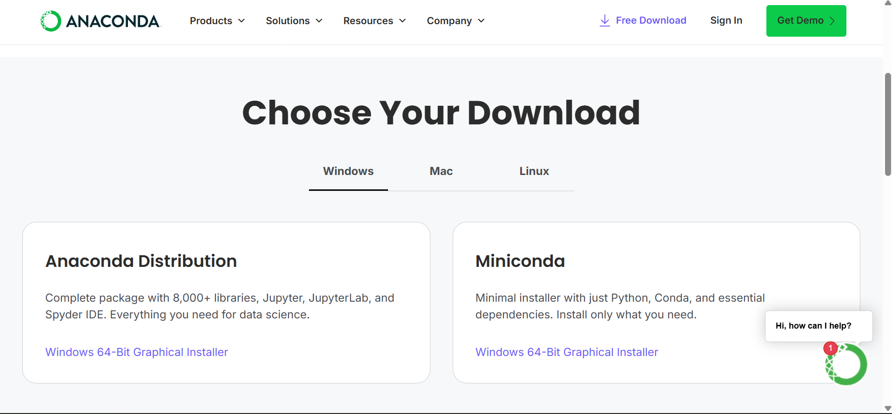
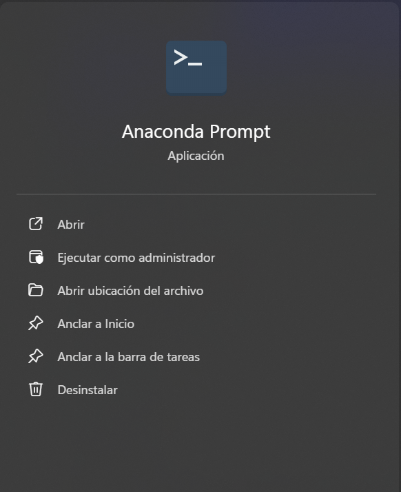
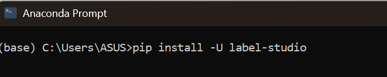

Integrantes Participacion
1 Campos Troyes, Edgar Orlando 100%
2 Vasquez Guevara, Jheferson Yoel 25%
3 Tapia Chavarri. Britney Emeli 100%
4 Fernandez Rojas, Jonatan Dali 25%
5 Gomez Cruz, Kevin Orlando 25%
6 Yantec Ocampo, Daemar Enrique 25%
Introducción:
En este trabajo se usó https://labelstud.io/ para realizar la anotación de imágenes usando la segmentación por polígonos, dentro del cual se usaron las clases o etiquetas hoja, escala y peciolo para segmentar partes de cada imagen. En este trabajo se explica todo el trabajo paso a paso.
Objetivo:
Realizar la segmentación por polígonos de 25 imágenes de hojas lúcuma.
Material:
Laptop
Lapicero
Instalador de anaconda
Cógido de label studio para instalación
25 imágenes de hojas de lúcuma
Procedimiento:
Paso 1.
Descargar el instalador de Anaconda en https://www.anaconda.com/download/success (Figura 1), e instalarlo (ejecutar con anticlic y “como administrador”, dejar todo por defecto)

Figura 1: Descarga de Anaconda Distribution
Paso 2.
Buscar “Anaconda Prompt” y abrir la intefaz (Figura 2).

Figura 2: Anaconda Prompt (clic en “abrir”)
Paso 3.
Buscar https://labelstud.io/ y copiar el código “pip install -U label-studio” (Figura 3) y dar Enter.

Figura 3: Ejecución de código: “pip install -U label-studio”
Cuando finalice ejecutar “label-studio” (Figura 4) y dar Enter.